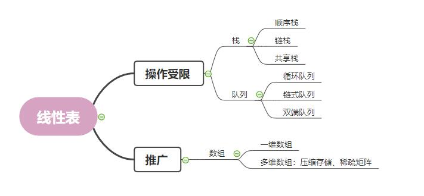
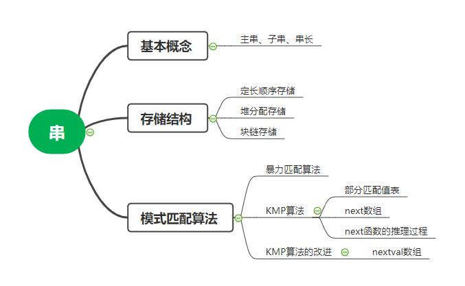
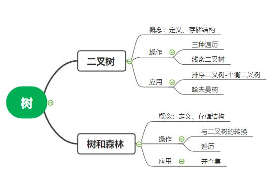

第一章：绪论
知识框架

- Q1:数组和链表的区别
-
从逻辑结构上来看，数组必须实现定于固定的长度，不能适应数据动态增减的情况，即数组的大小一旦定义就不能改变。
当数据增加是，可能超过原先定义的元素的个数；当数据减少时，造成内存浪费；链表动态进行存储分配，可以适应数据动态地增减的情况，且可以方便地插入、删除数据项。
-
从内存存储的角度看；数组从栈中分配空间，自由度小；链表从堆中分配空间，自由度大但是申请管理比较麻烦
-
从访问方式类看，数组在内存中是连续的存储，因此可以利用下标索引进行访问；链表是链式存储结构，
在访问元素时候只能够通过线性方式由前到后顺序的访问，所以访问效率比数组要低
- Q2:树和图的区别
-
树的元素存在一对多的关系，必须包含一个根节点，而图是多对多的关系，没有根节点
-
树都是已连接的，因此可以遍历；而图可能未连接，因此不适用层次遍历等
-
树是有向无环图，是一个分层的模型结构；而图是网络模型
第二章：线性表
知识框架

- Q1:线性表上基本操作的实现
-
(1)插入操作
-
最好情况：在尾部插入，时间复杂度为O(1)，
-
最坏情况：在头部插入，时间复杂度为O(n)，
-
平均情况：需要移动的平均次数为n/2，时间复杂度为O(n)。
-
(2)删除操作
-
最好情况：在尾部删除，时间复杂度为O(1)。
-
最坏情况：在头部删除，时间复杂度为O(n)。
-
平均情况：需要移动的平均次数为(n-1)/2，时间复杂度为O(n)。
-
(3)按值查找
-
最好情况：查找的元素在表头，时间复杂度为O(1)。
-
最坏情况：查找的元素在表尾或不存在，时间复杂度为O(n)。
-
平均情况：需要移动的平均次数为(n+1)/2，时间复杂度为O(n)。
- Q2:顺序存储与链式存储区别
-
1.存取方式：顺序表可以顺序存取，也可以随机存取；链表只能从表头顺序存取元素
-
2.顺序存取时，逻辑上相邻的元素，对应的物理存储位置也是相邻的；链式存储逻辑上相邻的元素，物理存储位置不一定相邻
-
3.基本操作，顺序表进行查找操作时较为容易，链式存储进行插入、删除操作时时间复杂度较低
-
4.空间分配：顺序存储在静态分配情形下，一旦存储空间装满就不能扩充，动态分配时，则需要移动大量元素，且若内存中没有更大块的连续存储空间，则会导致分配失败；
链式存储的节点空间只在需要时申请分配，只有内存有空间就可以分配，操作灵活、高效。
- Q3:用链表表示线性表的优点
-
不受空间限制，在节点的插入、删除方便，不用大量移动数据
- Q4:循环链表的优点
-
无须增加存储量，仅对表的链接方式稍作改变，即可使得表处理更加方便灵活
第三章：栈和队列
知识框架
- 
- Q1:栈和队列的实际应用
-
栈：铁路调度，洗盘子
-
队列：排队
- Q2:栈和队列的异同点
-
共同点：都是只能在线性表的端点插入和删除
-
不同点：栈是后进先出；队列是先进先出
第四章：串、数组和广义表
知识框架
- 
- Q1:KMP算法
-
在一个字符串中查找是否包含目标的匹配字符串。其主要思想是每趟比较过程让子串先后滑动一个合适的位置。当发生不匹配的情况时，不是右移一位，
而是移动（当前匹配的长度– 当前匹配子串的部分匹配值）位
第五章：树和二叉树
知识框架
- 
- Q1:二叉树的性质
-
在二叉树的第i层上之多有2^(i-1)个结点
-
深度为k的二叉树至多有(2^k)-1个结点
-
对任何一棵二叉树T，如果其终端结点数为a，度为2的结点数对b，则a=b+1
- Q2:特殊的树
-
1.AVLtree
-
自平衡二叉查找树。在AVL树中任何节点的两个子树的高度最大差别为一，所以它也被称为高度平衡树。查找、插入和删除在平均和最坏情况下都是O（log n）。
增加和删除可能需要通过一次或多次树旋转来重新平衡这个树
-
使用场景：AVL树适合用于插入删除次数比较少，但查找多的情况。插入删除导致很多的旋转，旋转是非常耗时的。AVL 在linux内核的vm area中使用
-
2.二叉搜索树
-
满足的条件：1.非空左子树的所有键值小于其根节点的键值；
2.非空右子树的所有键值大于其根节点的键值；3.左右子树都是二叉搜索树
-
应用场景：如果是没有退化称为链表的二叉树，查找效率就是lgn，效率不错，但是一旦退换称为链表了，要么使用平衡二叉树，或者之后的RB树，因为链表就是线性的查找效率。
-
3.红黑树
-
每个结点要么是红的要么是黑的
-
根结点是黑的
-
每个叶结点（叶结点即指树尾端NIL指针或NULL结点）都是黑的
-
如果一个结点是红的，那么它的两个儿子都是黑的
-
对于任意结点而言，其到叶结点树尾端NIL指针的每条路径都包含相同数目的黑结点
-
应用场景：广泛用在C++的STL中。如map和set都是用红黑树实现的
-
4.B+树
-
有n棵子树的节点中含有n个关键字，每个关键字不保存数据，只用来索引，数据都保存在叶子节点。是为文件系统而生的
-
B+树叶子节点保存了父节点的所有关键字和关键字记录的指针，每个叶子节点的关键字从小到大链接
-
B+树的根节点关键字数量和其子节点个数相等
-
B+的非叶子节点只进行数据索引，不会存实际的关键字记录的指针，所有数据地址必须要到叶子节点才能获取到，所以每次数据查询的次数都一样
- Q3:B树和B+树的区别
-
关键字的数量不同；B+树中分支结点有m个关键字，其叶子结点也有m个，其关键字只是起到了一个索引的作用，但是B树虽然也有m个子结点，但是其只拥有m-1个关键字
-
存储的位置不同；B+树中的数据都存储在叶子结点上，也就是其所有叶子结点的数据组合起来就是完整的数据，但是B树的数据存储在每一个结点中，并不仅仅存储在叶子结点上
-
分支结点的构造不同；B+树的分支结点仅仅存储着关键字信息和儿子的指针（这里的指针指的是磁盘块的偏移量），也就是说内部结点仅仅包含着索引信息
-
查询不同；B树在找到具体的数值以后，则结束，而B+树则需要通过索引找到叶子结点中的数据才结束，也就是说B+树的搜索过程中走了一条从根结点到叶子结点的路径
第六章：图
知识框架
- Q1: 邻接矩阵与邻接表
-
在邻接矩阵表示中，无向图的邻接矩阵是对称的。矩阵中第 i 行或 第 i 列有效元素个数之和就是顶点的度。
在有向图中 第 i 行有效元素个数之和是顶点的出度，第 i 列有效元素个数之和是顶点的入度。
-
在邻接表的表示中，无向图的同一条边在邻接表中存储的两次。如果想要知道顶点的度，只需要求出所对应链表的结点个数即可。
有向图中每条边在邻接表中只出现一次，求顶点的出度只需要遍历所对应链表即可。求入度则需要遍历其他顶点的链表。
-
邻接矩阵的优点是可以快速判断两个顶点之间是否存在边，可以快速添加边或者删除边。而其缺点是如果顶点之间的边比较少，会比较浪费空间。因为是一个 n∗n 的矩阵
-
邻接表的优点是节省空间，只存储实际存在的边。其缺点是关注顶点的度时，就可能需要遍历一个链表
- Q2:最小生成树
-
Prim算法首先以一个结点作为最小生成树的初始结点，然后以迭代的方式找出与最小生成树中各结点权重最小边，并加入到最小生成树中。加入之后如果产生回路则跳过这条边，选择下一个结点。时间复杂度为O(n2)。与图中边数无关，该算法适合于稠密图。
-
Kruskal在找最小生成树结点之前，需要对所有权重边做从小到大排序。将排序好的权重边依次加入到最小生成树中，如果加入时产生回路就跳过这条边，加入下一条边。当所有结点都加入到最小生成树中之后，就找出了最小生成树。其时间复杂度为O（eloge）。适合稀疏图
第八章：排序
知识框架
- 各类排序比较
- Q1:简述快速排序过程
-
选择一个基准元素,通常选择第一个元素或者最后一个元素
-
通过一趟排序将待排序的记录分割成独立的两部分，其中一部分记录的元素值均比基准元素值小。另一部分记录的元素值比基准值大
-
此时基准元素在其排好序后的正确位置
-
然后分别对这两部分记录用同样的方法继续进行排序，直到整个序列有序
- Q2:快排的优化
-
改进1：如果数组近乎有序，标定点的选择会影响快速排序的性能，如果每次都选择最小值作为标定点，快速排序时间复杂度会退化为O(n^{2})，因此需要随机化标定点元素
-
改进2：如果数组有大量相同元素，上面的做法会将相同元素分到大于v的区间，会造成两个子区间元素不平衡，所以需要将相等元素平衡地分入两个区间。
- Q3:冒泡排序算法的改进
-
设置一标志性变量pos,用于记录每趟排序中最后一次进行交换的位置。由于pos位置之后的记录均已交换到位,故在进行下一趟排序时只要扫描到pos位置即可
-
传统冒泡排序中每一趟排序操作只能找到一个最大值或最小值,我们考虑利用在每趟排序中进行正向和反向两遍冒泡的方法一次可以得到两个最终值(最大者和最小者) , 从而使排序趟数几乎减少了一半